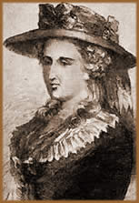

Nascida em Londres, em 9 de julho
de 1764, Ann Ward, é considerada a precursora do estilo
literário conhecido como "horror gótico".
As informações biográficas sobre Ann esmaecem
na espessa neblina dos anos e sua história torna-se quase
uma lenda pautada por dados questionáveis. Dessa forma,
não apenas a obra, mas principalmente, a vida da "senhora
Radcliffe" é alvo das interrogações.
Ann
era filha única do casal de comerciantes, Ann Oates e William
Ward, sendo que sua mãe tinha trinta e oito anos ao dar
à luz. Quando tinha entre sete e oito anos de idade, Ann
foi morar com o tio, Thomas Bentley. Por conviver com pessoas
muito mais velhas, Ann refugiava-se lendo romances e poesias.
Na juventude, estudou Direito e em 1784 conheceu o futuro marido.
Casou-se aos 23 anos, em 1787, com William Radcliffe, editor do
"The Gazetteer" e proprietário do "English
Chronicle", de quem herdou o sobrenome e teve um matrimônio
feliz.
Num momento da sociedade onde a genealogia era
mais importante que o caráter, principalmente entre as
mulheres, Ann Ward Radcliffe escrevia por prazer, sem objetivar
lucro, e seu esposo, que dedicava-se intensamente ao trabalho,
estimulava-lhe a atividade literária. Nesta época,
qualquer atividade cultural era quase essencial para preencher
os dias das jovens senhoras casadas que tinham apenas os criados
sob o comando.
Os primeiros anos de casamento foram culturalmente
muito ativos, o casal Radcliffe freqüentava óperas,
teatro e exposições de arte. Ann, como as outras
mulheres, via-se pressionada em manter a aparência social
de uma típica mulher da classe média inglesa. Assim,
ocupava-se com cães e música, lia e escrevia muito,
e apreciava as viagens com William.
A primeira publicação ocorreu em
1789. The Castles of Athlin and Dunbayne obteve grande
repercussão e tornou-se o rumo do que abordaria em sua
carreira literária: jovens heroínas em apuros sob
o teto dos sombrios castelos medievais. Nos dois anos seguintes,
a fórmula bem sucedia foi reproduzida em A Sicilian
Romance e The Romance of the Forest. Porém,
as maiores obras de sua vida ainda estavam por vir. Em 1794 foi
publicado The Mysteries of Udolpho e três anos
mais tarde, The Italian. Estes romances são os
principais responsáveis pela imortalidade da obra de Ann
Radcliffe.
Seus
trabalhos eram muito consumidos entre as classes média
e alta da Inglaterra e de crescente popularidade entre as jovens
senhoras casadas, que, provavelmente, espelhavam em Ann um protótipo
de mulher talentosa e libertária que conquistava um precioso
espaço em meio a uma comunidade masculinizada. Tanto, que
para publicar o romance The Mysteries of Udolpho, Ann
recebeu £500 (quinhentas libras) pelo contrato; um verdadeiro
ultraje à classe literária, predominantemente, masculina.
Os críticos contemporâneos a compararam a autores
como, Milton e Shakespeare. Sendo que suas duas primeiras publicações
eram consideradas o "Hamlet de Shakespeare". O romancista
escocês, Walter Scott, considerava Ann Radcliffe "a
primeira poetisa de ficção romântica".
A imensa popularidade de Ann Radcliffe deu origem
a um debate extenso. The Italian era considerado antipatriótico.
Outros trabalhos foram acusados de promover o republicanismo e
igualitarismo. Alguns críticos acusavam-na de inserir referências
ao lesbianismo e incesto, outros consideravam que suas obras eram
místicas e, de certa forma, soavam como "profecias".
William Radcliffe viu-se constrangido em meio ao clamor público
que a obra de sua esposa criara, e provavelmente, desencorajou-a
a continuar publicando os romances. Assim, The Italian,
de 1797, foi o último trabalho publicado em vida.
A partir deste momento e até 1801, o casal
Radcliffe fez diversas viagens. Ann e William visitaram o castelo
de Rochester, Feversham, Catedral de Canterbury, Castelo de Arundel,
Ilha de Wight, entre outros. Nesse mesmo período, Ann abalou-se
profundamente com as mortes da tia e dos pais. Sua mãe
deixou-lhe um testamento no qual os bens eram de propriedade exclusiva
de Ann, e seu marido, William, não tinha autonomia para
interceder nos negócios.
Entre 1802 e 1807, o casal continuou viajando e
visitaram o Castelo de Warwick, Blenheim, e Knole. Neste período,
Ann escreveu o romance Gaston Blondeville, que era totalmente
oposto ao seu estilo consagrado e seria apenas uma tentativa de
retornar ao mundo literário de uma forma menos polêmica
e socialmente aceitável. Por motivos desconhecidos, a publicação
de Gaston Blondeville foi cancelada diversas vezes.
As incursões por diversos pontos da Inglaterra
e região continuaram nos anos seguintes para Ann e William.
Estando afastada do convívio social, criaram-se vários
boatos de que Ann havia morrido em acidentes durante as caminhadas
ou escaladas que praticava normalmente em sua viagens. Este argumento
foi usado muitas vezes para promover o turismo nos locais onde
Ann teria acidentado-se fatalmente.
Ainda,
dizia-se que ela comia carne de porco e cenouras cruas, momentos
antes de deitar-se para dormir, para que a indigestão proporcionasse
pesadelos e, conseqüentemente, a imaginação
necessária para enredo de seus livros. Criavam-se rumores
que havia cometido suicídio; ou havia tornado-se vítima
da assombração dos personagens que criava, enlouquecido
e internado-se num sanatório. Na verdade, neste período,
Ann hospedou-se em diversas cidades em busca de ar puro para tratar
de uma doença pulmonar, possivelmente a tuberculose, que
lhe abatera.
Os últimos anos de sua vida foram debilitados
pela má saúde física ocasionada pela asma
que progredia incessante. A saúde mental também
foi deteriorando-se e Ann já não era tão
lúcida. Em 1823 foi para Ramsgate onde morreu, provavelmente,
no dia 7 de fevereiro, vítima de problemas respiratórios
causados pela pneumonia.
O romance, Gaston Blondeville, foi publicado
através da iniciativa de seu marido, em 1826. Logo após
a morte de Ann, William Radcliffe casou-se com a empregada e mudaram-se
para Versalhes, onde morreu em 1830, deixando uma propriedade
significativa à sua nova companheira.
Através do estudo de sua obra, pode-se supor
que Ann espelhava em seus personagens, características
de sua própria personalidade: senso de rejeição,
timidez neurótica, docilidade e afetação.
Em seus romances, percebe-se que retratava a própria mãe
como uma mulher de meia idade ineficaz; e o pai como um homem
ávido e um negociante fracassado. Além disso, outro
fator interessante é que a maioria dos protagonistas está
à beira da loucura.
Ann escreveu poucas cartas a amigos, e os diários
que foram localizados abordam, basicamente, as viagens que fizera
ao lado do marido. Porém, se tomarmos como base os fragmentos
que foram encontrados, podemos deduzir passagens significativas
de sua vida. Os diários não revelam factualmente
nenhum contato humano com qualquer outro viajante ou mesmo habitantes
dos locais por onde passava; fato que faz crer que Ann era um
tanto intimista e avessa ao convívio social. Esses parcos
relatos incluem referências muito tristes às mortes
dos pais e manifestam uma profunda melancolia e um estado depressivo
avançado em seus últimos anos.
Radcliffe influenciou autores como Lord
Byron e Allan Poe.
No conto, O Retrato Oval, Poe faz uma breve citação:
"O castelo que meu criado resolvera arrombar a fim de
evitar que eu, gravemente ferido estava, passasse a noite ao relento,
era uma dessas construções portenhosas, a um só
tempo lúgubre e grandiosa, que há séculos
assombram a paisagem dos Apeninos e também povoam a imaginação
da senhora Radcliffe".
A trajetória curta e
bem sucedida de Ann Radcliffe caracterizou mais que uma tendência
literária, mas, principalmente, uma personalidade exposta
através da narrativa precisa e instigante. Sua obra é
lembrada até hoje pela legião de admiradores que
se criou ao longo do tempo, formada não apenas por leitores
sedentos de fantasia, mas, principalmente, por autores que seguiram
sua tendência de criação, tema e narrativa.
Assim, imortaliza-se o legado de talento e ousadia deixado por
Ann Radcliffe, há mais de duzentos anos.
Por Spectrum
Obras
Disponíveis:
Contos (Downloads)